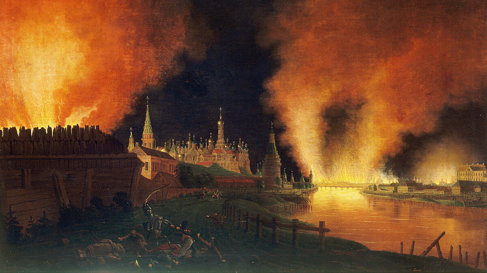

История города

Далекий-далекий 1147 год. На крутом холме над рекой начинает свою историю древний город Москва, хотя поселения на Боровицком холме и его окрестностях появились гораздо раньше, упомянутого в древней летописи года.
При раскопках в Московском Кремле были обнаружены артефакты, свидетельствующие о существовании Москвы в конце XI века. Это были свинцовая печать, датируемая между 1093 и 1096 годами, печатью скрепляли грамоты. Но еще большим фактом было выявление наличие рва, защищавшего поселение в XI-XII веках.
Можно было предположить, что Москва была основана еще в конце XI века, как княжеский форпост в земле вятичей, противившихся покорению со стороны ростово-суздальских князей.
Первое упоминание Москвы в летописи датируется 1147 годом. Тогда ростово-суздальский князь Юрий Владимирович Долгорукий пригласил своего союзника новгород-северского князя Святослава Олеговича (кстати, отец князя Игоря из "Слово о полку Игореве") со словами: "...приди ко мне, брате, в Москов".
Принять гостя, щедро угостить его в Москве было вполне возможно, если предположить, что это был уже сформированный, довольно укрепленный город, а значит и защищенный, что говорит о его существовании еще за лет пятьдесят до этого события. По летописному сказанию, Москву на тот момент уже окружали несколько "сел красных", принадлежавших "боярину некого богата суща Кучко Стефана Ивановича".
Уже в 1156 году Тверская летопись сообщила об укреплении города крепостной стеной. Так появилась территория на вершине Боровицкого холма, ставшая крепостью и именуемая и по ныне Кремлем. А вокруг раскинулись посадные домики и стали разрастаться селения, соединяемые между собой тропами, будущими улочками и кольцами.
В 1238 году Москву разорили и сожгли полчища хана Батыя "...люди избиша от старьца и до сущаго младенца; а град и церкви святыя огневи предаша, и манастыри вси и села пожгоша, и много именья въземше отъидоше"
На Руси на много лет установилась власть монгольских ханов, но Москва была сравнительно далеко от Золотой Орды и в этот отдаленный уголок потянулись торговцы, крестьяне, ремесленники, по сути они и сыграли роль в возвышении и становлении города Москвы, как торгового центра Руси.
Москва и окружающие её села достались сыну великого князя Александра Невского Даниилу, который и стал первым московским удельным князем. А вот его сын Иван был смекалист, и довольно успешен в своих делах, с легкостью округлял свои владения монетой, так и получил прозвище Калита.
Преемники Ивана Калиты князья Семен Гордый и Иван Красный также следовали его примеру и Москва возвышалась года из года, да так, что перенесли в Москву кафедру Митрополита всея Руси после 1326 года, да начали строить каменный собор Успения Богородицы.
Победа на Куликовском поле в 1380 году стала предвестником освобождения от татаро-монгольского ига, что подтвердило главенствующую роль Московского княжества среди всех княжеств на Руси.
В XIV веке Москва стала стремительно меняться. Стены крепости московской при Иване Калите перестроили на новые — дубовые, а к 1367 году по указу князя Дмитрия Донского были возведены белокаменные стены.
В Кремле достроили Успенский собор, ставший главным в московском княжестве — именно в нем стали свершаться торжественные мероприятия: коронации князей, царей, а потом и императоров. Были возведены в Кремле церкви Иоанна Лествичника, Спаса на Бору, Михаила Архангела, заложены Чудов и Вознесенский монастыри.
Вместе с Кремлем росли поселения и на земле вокруг стен, поднялся посад, в конце XIV века обнесенный валом со рвом. На посаде выросли Рождественский, Высокопетровский и Сретенский монастыри, которые проложили улицы между посадами и тропинки к селам и разбитым по округе поселениям. Выстраивались монастыри и за пределами посадов — Андроньевский со Спасским собором, Симонов монастырь.
Великий князь Иван III укрепил власть, централизовал её на Московском государстве, присоединив в 1478 году Новгородскую землю. При нем и окончилось долгое ордынское владычество.
А дальше начались времена смуты. Самозванец, провозгласивший себя сыном Ивана Грозного Димитрием захватил престол, и спустя недолгое был свергнут в мае 1606 года восставшими москвичами.
Затем — выборы нового цара, Василия Шуйского, вступление на московскую землю нового самозванца Лжедимитрия II,вступление поляков в Москву в августе 1610 года и освобождение Москвы народным ополчением во главе с князем Дмитрием Пожарским и Кузьмы Минина в августе 1612 года.
В 1613 году большим событием в истории России стало выбирание делегатами Земского собора в Москве царя, которым стал Михаил Романов, династия которого правила до 1917 года.
На время правления Петра I Москва перестала быть столичным городом. Не любил Петр I Москву, а был увлечен возведением нового современного города на Неве (быть ближе к Европе). И Москва на долгие десятки лет остановилась в развитии.
При императрице Елизавете Петровне наступил период расцвета культуры и науки: в 1755 году открылся первый русский университет, со следующего года стала выходить первая газета "Московские ведомости", с 1760 года — первый московский журнал "Полезное увеселение", открылась университетская типография.
При Екатерине II, затем и Павле I в Москве открывалось много новых зданий, культурных учреждений, дворцов и особняков. После отмены обязательной службы для дворян, многие из них поселились именно в Москве, проводя свои дела, внося вклад в развитие города. Именно при Екатерине от колодцев началось проведение водопровода и город становился чище, опрятней.
К этому времени относится возведение значительных общественных зданий, таких как Петровского и Екатерининского дворцов, Воспитательного дома, Военного госпиталя, Сената в Кремле, Голицинской и Павловской больниц, дома Пашкова, дворцов Демидова, Барышникова, Покровских казарм и других зданий.
Непростая роль Москвы, ставшая общеизвестной, провозглашаемая классиками Серебряного века литературы, пришлась на пору Отечественной войны 1812 года. После сражения в Бородино 2 сентября 1812 года Наполеон с французской армией вступил в оставленный населением и войсками город, в котором почти сразу начался, такой очередной в истории Москвы, пожар, раздутый на многие строения сильным ветром.
Оставление москвичами города, горящим пожаром, привело к тому, что наполеоновская армия осталась без продуктов и запасов, да и открытые винные погреба изрядно расслабили уставших французских офицеров, что вынудило месяц спустя к 6-11 октябрю выйти из города ни с чем, что и стало началом конца Отечественной войны 1812 года.

В городе сгорело около 70% всех домов и строений. Просто так отстроить заново Москву было непросто, предусматривалась перепланировка многих районов.
Река Неглинка была заключена в трубу, прямо под новым Александровским садом, разбитом вдоль кремлевской стены. Тут же выстроили Манеж, Театральную площадь на которой возвели Большой Петровский театр.
После тех печальных событий Отечественной войны к концу 1820-х годов Москва была восстановлена полностью и продолжала стремительно развиваться. На Красной площади открылся памятник Минину и Пожарскому, на Воробьевых горах заложен храм Христа Спасителя, строительство которого велось почти 44 года. В 1847 году открылись линии первого общественного транспорта (— то были конные линейки), а с 1851 года началось железнодорожное сообщение с Петербургом (тогдашнего столичного города).
В начале XX века Москва испытала просто невероятный по размаху бум строительства. Только одним летом 1910 года было построено более 3000 зданий, как жилых, так и административных. Появлялись общественные заведения, чуть ли ни на каждой улице открывались учебные и культурные заведения — Коммерческий институт, Универститет Шанявского, театры, училища, вокзалы, больницы, родильные дома, богодельни и приюты. Открыли свои двери знаменитые музеи — Исторический, Политехнический, Зоологический, музей Изящных искусств (будущий Государственный музей истории искусств имени А. С. Пушкина) и другие заведения.
Тем временем, в стране происходило и стремительное политическое развитие, сосредотачиваемое и в Москве, подогреваемое быстрым темпом роста города, а значит и ростом, как благополучия, так и определенных трудностей и стеснений, в то время как и волнений со стороны бедной и рабочей части населения. Создавались наспех политические партии, росло забастовочное движение, приобретавшее со временем характер массовости. Нарастал накал между разными слоями дворянских кровей и простого народа, слоем предпринимателей и простых рабочих.
Все эти предпосылки привели к революционным событиям 1917 года и в октябре-ноябре партия большевиков совершила государственный переворот. Главные его события разворачивались в Петербурге, а в самой Москве волнения проходили с применением вооруженной силы, был подвергнут артиллерийскому обстрелу Кремль, что осталось менее замеченным в истории.
Новая власть в городе была установлена 3 ноября 1917 года, и в марте 1918 года из Петербурга переехало в Москву правительство во главе с Владимиром Ильичом Лениным. Москва была объявлена столицей нового государства.
После гражданской войны и с введением НЭП (новой экономической политики), это было временное допущение капитализма, Москва начала восстанавливаться. С конца 1920-х годов в столице открылись новые предприятия самых разных отраслей промышленности — авиационной, автомобильной, станкостроительной, часовой, электротехнической и других. В Москву была переведена Академия наук.
Очередной приток в новую столицу населения из сельских районов России быстро поднял численность жителей города. Так, в 1923 году в Москве насчитывалось 1,5 млн. жителей, а к 1936 году количество населения состовляло уже 3,6 млн. человек. Постоянная нехватка жилой площади остро ощущалась в первые десятилетия правления советской власти и это стало перерастать в серьезную проблему.
Разработанный под руководством архитекторов Владимира Семёнова и Сергея Чернышёва план реконструкции должен был превратить старую Москву в новый процветающий социалистический город — на планете. Утверждён план 10 июля 1935 года постановлением ЦК ВКП(б) и СНК СССР № 1435 «О генеральном плане реконструкции города Москвы».
Особенное место в генплане имели амбициозные идеи строительства здания Дворца Советов. Планы касались и расширения Красной площади, для этого планировалось снести здание торговых рядов (нынешнего ГУМа) и другие исторические объекты, но сам Дворец Советов приняли решение строить на месте Храма Христа Спасителя, который был взорван для этой цели в 1931 году.
Уже была готова площадка на месте снесенного храма, был вырыт гигантский котлован и залит нижний фундамент. Этим планам помешала, начавшаяся в 1941 году, Великая Отечественная Война. И в будущем на этом месте вырытый котлован использовали для сооружения открытого бассейна "Москва".
К сожалению, хоть и Генеральный план решил многие проблемы, превратив город в крупную социалистическую столицу — символ социализма и труда, но были и разрушены многие исторические памятники: древние монастыри, Китай-городская стена, Казанский собор на Красной площади, Воскресенские ворота, Храм Христа Спасителя, Сухарева башня, памятники Александру II и Александру III. В современное время многие из этих исторических наследий были восстановлены в конце XX века.
В первые месяцы (середина октября 1941 года), после объявленной Гитлером и фашистскими захватчиками войны против СССР, Москва оказалась под серьезной угрозой захвата, но немецкие войска были остановлены героическим сопротивлением советских защитников практически на самых подступах города. А уже в начале декабря советские войска перешли в наступление и угроза городу была снята.
После окончания войны (вторичное по требованию Сталина после первого подписания представителями Верховного командования вермахта, акта в ночь с 8 на 9 мая о капитуляции нацисткой Германии) 24 июня 1945 года в Москве состоялся торжественный Парад Победы.
На парад вышли сводные полки фронтов, сводный полк наркомата обороны, сводный полк Военно-морского Флота, военные академии, военные училища и войска Московского гарнизона. Принимал Парад Победы Маршал Советского Союза Г. К. Жуков, командовал парадом Маршал Советского Союза К. К. Рокоссовский. Жуков и Рокоссовский проехали по Красной площади на белом и караковом (коричневого окраса) конях. И. В. Сталин наблюдал за парадом с трибуны Мавзолея Ленина.
В первые годы после Великой Отечественной Войны наступил кризис, голод и нехватка жилищных площадей. Несмотря на это были воплощены амбициозные планы по строительству 7-ми каменных высоток, и ряда новых зданий, так называемый ответ американским небоскребам и показательное становление в Москве Сталинской архитектуры (Сталинский ампир).
В послевоенные годы генеральный план реконструкции Москвы продолжил реализовываться, но со значительными корректировками в планах. С 1948 года реконструировали ВСХВ, преобразовав к 1958 году в ВДНХ СССР.
В это время прекращается снос православных храмов, многие здания храмов, лишенные крестов и колоколен, превращаются в административные здания, это позволило им сохраниться до нашего времени и будущей реконструкции.
Осенью 1974 года столицей проведения XXII летних олимпийских игр была выбрана Москва. Город задолго начал готовиться к этому грандиозному событию тех, довольно "размеренных и скучных" застойных лет. Была построена гостиница "Космос", Олимпийская деревня и целый район в Тропарево, где будут останавливаться олимпийские спортсмены и гости Олимпиады. В 1976—1979 годах был капитально отремонтирован главный стадион "Лужники", где был зажжен олимпийский огонь. 19 июля 1980 года прямо к началу олимпийских игр был открыт крытый спортивный комплекс "Олимпийский".
В конце 80-х годов — начале 90-х годов Москва являясь столицей тогдашнего СССР, стала ареной значительных событий в основном на политических изменениях. К 1985 году закончилось время холодной войны и начались масштабные перемены в идеологии среди населения, что повлияло на экономическую и политическую деятельность СССР.
Михаил Сергеевич Горбачев избирается 5-м Генеральным секретарем ЦК КПСС (высшая должность в Коммунистической партии Советского союза). Горбачевская политика путем проведения реформ перестройки не увенчалась успехом и позиции Советского союза падают, как на внешней политической арене, так и массово среди населения СССР. Всё большая свобода слова и отпускание режимов, окончательная оттепель, делает привлекает в страну коммерческие движения со стороны других стран. Меняется мода в Москве, все больше москвичи хотят походить на "свободных людей" с западного мира, происходит смена идеалов с социалистического мышления на "кооперативное".
В 1989 году москвичи, несмотря на сопротивление коммунистической партии, подавляющим большинством избирают Бориса Николаевича Ельцина народным депутатом. Страна подходит ко времени накала больших событий, которые вот-вот произойдут в Москве, в столице распадающегося некогда сильнейшего государства СССР.